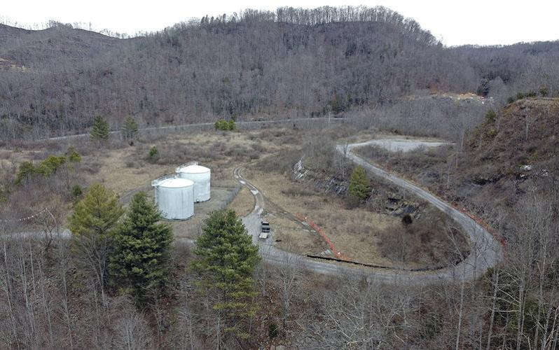

Feb 29, 2024
With 89% of the U.S. population predicted to live in urban areas by the year 2050, it’s becoming more important than ever for residents to have a place to reconnect with nature. Incorporating green space back into a city after the trees have been cut down and skyscrapers and residential buildings have taken over can have many benefits.
“The research shows green spaces have a wide-ranging impact on our physical, mental and spiritual well-being,” said Rumi Chunara, an associate professor of computer science and biostatistics at New York University.
Parks can also play a role in mitigating climate change. They absorb carbon, help manage stormwater excess, improve air quality and help alleviate urban heat islands, where hot air is trapped in metropolitan areas.
“In cities, a lot of natural land gets covered with buildings, pavement and things that absorb heat more. Having green spaces can mitigate all of those things,” Chunara explained. “It's really important for the planet and the city as a whole.”
According to the World Health Organization, green spaces should be within walking distance of homes, and people from all races, ethnic backgrounds and income levels should have fair access to them.
“We know that low-income urban areas are often left behind,” said Tony Richardson, director of urban conservation initiatives at The Conservation Fund.
“If we want people to care about the environment broadly, and we want people to understand environmental sustainability, then we have to meet people where they are, and we have to start in their backyard,” Richardson added.
ConsumerAffairs analyzed data from the Trust for Public Land, a nonprofit that promotes access to the outdoors, to rank the 10 best and worst cities in the U.S. in terms of their access to parks. To produce the ranking, ConsumerAffairs averaged four key metrics: walkable park access (residences within a half-mile walk to a park), the percentage of city area dedicated to park space, distribution of park access based on income and distribution of park access based on race and ethnicity. The 100 largest U.S. cities were considered.
The top 10 U.S. cities for park access
#10 Honolulu, Hawaii
The capital of Hawaii has almost 65,000 total acres of green space, and 91% of that space is on natural lands. Almost three-quarters of all residents here live within a half-mile walk of a park. Honolulu also claims the title of the most volleyball-friendly city, with 186 volleyball nets in its public parks — more than any other city in the U.S.#9 Cleveland, Ohio
A city that prides itself on offering a variety of outdoor recreation options, including beaches, parks and one of the oldest zoos in the U.S., Cleveland ranked in the top five in distribution of park space by income and race. Cleveland has an impressive 176 parks across 3,300 acres and ranked second and fourth overall in equal park access across income and race.#8 Chicago, Illinois
The second-most-populated city in the top 10 has more than 600 parks, and nearly all residents live within a half-mile walk of one. Chicago is ranked second in the nation for the total number of splash pads in public parks, giving the youngest residents a fun place to enjoy in the warmer months.#7 Irvine, California
One of the nation's largest planned urban communities has allocated over 11,000 acres to parks. Irvine has more than doubled in population since 2000, yet the city has done a great job of making sure there is an equal distribution of park space for all income levels. The city has proven that it’s committed to investing in parks, as it had the highest per capita park spending on public parks in the 2022 fiscal year. It’s also a great place for trail lovers, with 113 miles of nature trails.#6 Seattle, Washington
Seattle ranked high on the list, with 99% of residents living within a walkable distance of a park. The Emerald City boasts 501 parks and offers a good mix of outdoor recreational activities, including the highest number of pickleball courts per 20,000 residents of all 100 cities analyzed. Residents of color have not been left behind in this city. Predominantly nonwhite neighborhoods have 5% more park space per person than those in white neighborhoods.#5 Jersey City, New Jersey
The second-largest city in the Garden State boasts over 1,000 acres of parkland. Nearly all residents live within a half-mile walk to a park, and children, adults and seniors have equal access. The city had the lowest per capita investment in parks on our list, yet it still managed to rank high in equality and accessibility.#4 Cincinnati, Ohio
The hometown of former president William Howard Taft finished in the top quartile in all four evaluated categories. Cincinnati has over 8,000 acres of park space and ranked in the top 10 for equal park access across race. It boasts the third-most swimming pools for its population and fourth-most public drinking water fountains of all cities analyzed.#3 New York, New York
The most populated city on our list of top 10, New York City has dedicated an impressive 21% of its area to park space. There are 4,291 total park units, and 99% of people live within half a mile of a park. The City That Never Sleeps boasts nearly five parks for every 10,000 residents and is a great place for sports lovers. The city ranked first in the total number of fields, diamonds and courts, and for those who enjoy basketball, there are 1,336 documented basketball hoops, which is far more than any other city on the list.#2 Boston, Massachusetts
Ranking high on the list is Boston — home to the oldest city park in America, Boston Common. The most populated city in the commonwealth of Massachusetts has nearly 400 parks covering 5,160 acres. The commissioner of the Boston Parks and Recreation Department, Ryan Woods, told ConsumerAffairs he’s proud of his city’s ranking. “We've invested significantly in our park system, ensuring that every neighborhood is within a 10-minute walk of a park or open space,” Woods said. “While we're proud of where we are today, we know there's more work ahead to enhance and expand our parks to serve the needs of all residents.”#1 Washington, D.C.
The nation’s capital nabbed the No. 1 spot on the list, with more than 9,000 acres of parkland. Nearly all residents live within a half-mile walk of a park, and the city has done a great job of ensuring that everyone has fair access. It’s no surprise that history is the main focus of many of this city’s parks. The oldest park in this city is the National Mall, which was established in 1791. The Lincoln Memorial, honoring former President Abraham Lincoln, is the most popular park in the city, with an estimated 7 million annual visitors.The 10 worst cities for park access
#10 Bakersfield, California With only 6% of the city’s area dedicated to parks, Bakersfield finds itself at No. 10 on the list of cities with the worst park access. In this city, less than half of residents live within a half-mile walk of a park, and low-income neighborhoods have 40% less park space per person than high-income neighborhoods. In addition, residents in predominantly nonwhite neighborhoods have 68% less park space per person compared with those living in white neighborhoods.
#9 Tucson, Arizona
Arizona’s second-largest city only has 162 parks for its nearly 550,000 residents. Tucson has dedicated only 4% of its area to parks, and the city ranked low in distribution of park space by race and income.#8 Wichita, Kansas
Also ranking low on the list was Wichita. The largest city in Kansas has 129 parks, and only a little over half of the residents live within a half-mile walk of them. The city also lacks park amenities: It has no public volleyball courts, and there is only one community garden.#7 Baton Rouge, Louisiana
Baton Rouge has dedicated only 3% of its land to green spaces. There are 92 parks in total, and just over half of the residents are within a half-mile walk of them. Low-income neighborhoods in this city have 52% less park space per person than high-income ones.#6 Garland, Texas
Located just 19 miles northeast of Dallas, Garland scored below average for equal park access. Residents in white and wealthy neighborhoods have access to more park space per person than those living in neighborhoods of color and low-income areas. The city has 63 parks in total, yet it has no walking tracks, splash pads or skate parks. There’s also only one public dog park for a city with over 250,000 residents.#5 Irving, Texas
Irving, located between Dallas and Fort Worth, ranked in the bottom quartile for all categories measured. The city has only three pickleball courts, and there are no community gardens or nature trails. Only 5% of Irving is parkland, and neighborhoods of color have access to 64% less park space per person than those in white neighborhoods.#4 Santa Ana, California
Santa Ana has no public dog parks, pickleball courts, disc golf courses or splash pads, and it ranked in the bottom 12 in three of the four categories measured. Parks make up only 3% of Santa Ana’s total area. The city has only 49 parks, and it scored below average in distribution of park space by income and race.#3 Laredo, Texas
Located on the border of Mexico, this southern Texas city has fewer than 100 parks, and people do not have equal access to them. Only 52% of people live within a half-mile walk of a park in Laredo, and the city has no pickleball courts, “inclusive” playgrounds — designed to be physically accessible to children with disabilities — walking loops, tracks or fitness zones.#2 Oklahoma City, Oklahoma
In the capital of Oklahoma, only 42% residents live within a half-mile walk of a park. Oklahoma City has 191 parks, or an estimated 2.7 for every 10,000 residents. OKC spent a below-average amount of money on its parks per capita in the 2022 fiscal year.#1 Winston-Salem, North Carolina
Winston-Salem landed at the bottom of our 10 worst cities. It has 88 parks, and only 37% of the population lives within a walkable distance — second-worst in the U.S. The city has no “inclusive” playgrounds for children with disabilities or disc golf courses. It also ranked in the bottom 10 for total public park spending; the city spent $58 per person in the fiscal year 2022.More green space planning and investment is needed in many U.S. cities
Cities have a unique opportunity to invest in public green spaces, and some are doing a better job at it than others. While some urban areas have prioritized making park access equitable, others have failed to give nonwhite and low-income communities equal access to them.
The Environmental Protection Agency has developed information materials explaining the links between urban heat islands, underserved communities and historic redlining.
The EPA offers examples of how communities can implement fair and equitable solutions to protect residents most at risk from extreme heat.
An increase in buildings and paved surfaces, combined with a lack of vegetation and shade, is creating heat islands by causing temperatures to rise. Research has shown that people living in heat islands are more likely to experience heat-related illness and death, and predominantly low-income and nonwhite neighborhoods tend to face higher temperatures.
Remmington Belford, press secretary at the EPA, told ConsumerAffairs he’s aware that some places could use extra help addressing inequities in park access.
“In working with community partners across the U.S., EPA is aware of the many barriers some communities have experienced in creating and maintaining parks, waterfronts or natural spaces with broad access to residents,” Belford said. “EPA's Office of Community Revitalization has worked with many communities on strategies to increase and improve green public spaces to mitigate heat, promote wellness and to promote cleaner air and water.”
As part of the Greening America’s Communities program in Birmingham, Alabama, the EPA helped devise a plan for a neighborhood park and community green space that incorporated solutions for green infrastructure and urban heat island mitigation.
In Las Vegas, the EPA supported a community-led workshop focused on a failed neighborhood park space that had been closed and fenced off. The suggested repurposed space would include vertical farming, a food distribution hub, an education center, an outdoor community area and a retail food co-op providing open space access.
The National Park Service is also helping revitalize parks across the U.S. In November 2023, the Department of the Interior announced that the NPS would distribute $21.9 million in funding to parks across America to increase outdoor access in urban areas.
Two cities benefiting from this funding are Buffalo, New York and Greensboro, North Carolina. In Buffalo, the NPS will use more than $2 million to rehabilitate a severely deteriorating multiuse athletic field built in the 1950s in a high-poverty community. The revamped space will include a walking loop, tennis and basketball courts, a picnic area, a chess area and 100 new trees.
The city of Greensboro will get more than $4 million to renovate the historically underserved community at Nocho Park, where the NPS will replace playground equipment and add a nature play area, community gathering areas, a full-size basketball court, parking, restrooms and sustainable landscaping.
In 2022, the Interior Department awarded $192 million to create more public parks and expand recreational offerings in urban areas.
More Portfolio Items


Grandparents raising grandchildren
Dec 12, 2021

Why These Real Housewives Quit
July 9, 2022

When the water runs dry
Feb 1, 2020


The Man who Broke the Sound Barrier: The Fastest Man
Alive
December 8, 2020

UMWA President Talks Biden’s Energy Plans
Mar 6, 2021